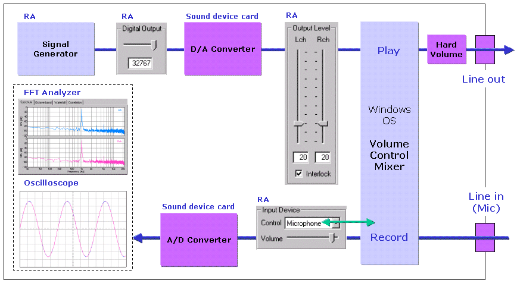

DSSF3 > RA > Reference Manual > Appendix
About volume control setting
The figure below is an illustration of the functional composition inside a PC.

The volume of the input device in RA controls the Windows volume control (recording). This is called "software volume."

Volume control of Windows should be silent except WAVE.

DSSF3 > RA > Reference Manual > Appendix